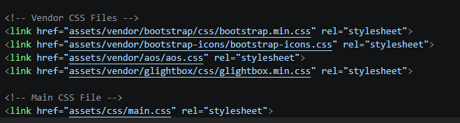
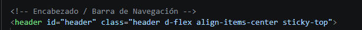
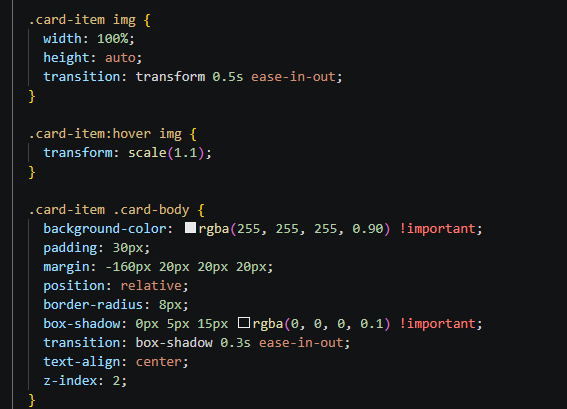

Investigación de CSS
Hojas de Estilo en Cascada, Modelo de Caja y Maquetación Web
1. ¿Qué es CSS y cuál es su Importancia?
CSS (Cascading Style Sheets) es el lenguaje formal utilizado para describir la presentación visual y el diseño de documentos estructurados en HTML. Su función primordial es transformar documentos de texto plano en interfaces gráficas interactivas, estéticas y adaptables a cualquier pantalla.
2. Contenido, Estructura y Presentación
El desarrollo web moderno se rige bajo el principio de separación de responsabilidades:
- Contenido: La información bruta, textos, datos y multimedia transmitidos al usuario.
- Estructura (HTML): La jerarquía y significado semántico del contenido (títulos, listas, secciones).
- Presentación (CSS): La estética visual, tipografías, colores, alineación espacial y animaciones.
3. Formas de Aplicar CSS
Existen tres métodos estandarizados para vincular estilos a un documento HTML:
En Línea (Inline)
<p style="color: blue;">Se aplica directamente en el atributo del elemento. Tiene la máxima especificidad pero no es reutilizable.
Interno (Embebido)
<style> p { color: blue; } </style>Declarado dentro de la etiqueta <head>. Útil para estilos exclusivos de una sola página.
Externo (Recomendado)
<link rel="stylesheet" href="...">Hojas de estilo en archivos .css separados. Permite reutilizar reglas en todo el sitio web.
¿Cómo vinculamos hojas de estilo externas en SIX-SEVEN?

4. Selectores, Clases e IDs
Los selectores definen a qué elementos HTML se les aplicarán las reglas de diseño:
- Selector de Tipo / Etiqueta: Afecta a todos los elementos del mismo tipo (ej.
h1,p). - Clases (
.clase): Reutilizables en múltiples elementos para aplicar estilos compartidos (ej..d-flex). - Identificadores (
#id): Únicos por documento; tienen mayor especificidad y se usan para elementos singulares (ej.#header).
Uso de ID y Clases en nuestro Header:

5. El Modelo de Caja (Box Model)
En CSS, cada elemento se renderiza como una caja rectangular compuesta por 4 capas concéntricas:
La propiedad box-sizing: border-box asegura que el padding y el borde no aumenten el tamaño total definido para el elemento.
6. Ejemplos de CSS Personalizado en SIX-SEVEN
Reglas CSS propias implementadas en nuestra plataformaEfectos Hover en Tarjetas
Transiciones suaves con elevación de sombras y escalado:
transform: translateY(-3px);Degradados y Fondos Hero
Superposición de capas translúcidas para contraste de texto:
background: linear-gradient(...)Control de Imágenes
Ajuste de encuadre responsivo sin distorsión de aspecto:
object-fit: cover;Carga de nuestra hoja de estilos personalizada:
